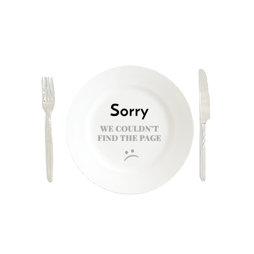

Bananas Foster Ice Cream Cake
If you're looking for decadence, look no further — you've found the Holy Grail of desserts. Honestly, this cake makes us wonder why Bananas Foster hasn't always been served on top of ice cream cake.
GET IT RECIPE

Raspberry & Cream Frozen Yogurt Pie

35min |

7

14

Giant Ice Cream Sandwich
20min |
4
356
Dark Chocolate Crunch Ice Cream Sandwich Cake
15min |
4
167
Bananas Foster Ice Cream Cake
15mins

Easy
SAVE RECIPE
1 (8 ounce) container frozen whipped topping, thawed 20 chocolate round wafers, divided 1 (7 1/4 ounce) bottle Smucker's® Hot Dark Chocolate Microwaveable Topping, divided
Directions
ARRANGE 8 to 9 ice cream sandwiches in 9-inch square pan, cutting to form an even layer. Spread with half of whipped topping. Break or crush chocolate wafers and sprinkle over the whipped cream. Microwave 1 cup of chocolate topping into small microwave-safe bowl on HIGH for 30 seconds. Drizzle evenly over wafers. TOP with remaining 8 to 9 ice cream sandwiches to form an even layer. Spread with remaining whipped topping. Freeze 3 hours or overnight.
404
BACK
Autor
Karen Gray
United States
About Lemon
Over the fifteen-year life span of Food.com, we’ve learned that – in addition to eating – sharing is what you do best. And thanks to the 20 million of you who come here each month, we now have 500,000 recipes to show for it, more than anywhere else in the digital universe. We also have tons crazy-tempting photos, troves of recipe reviews and more than 2 million Facebook likes. That’s a heck of a lot of Food. Thank you!